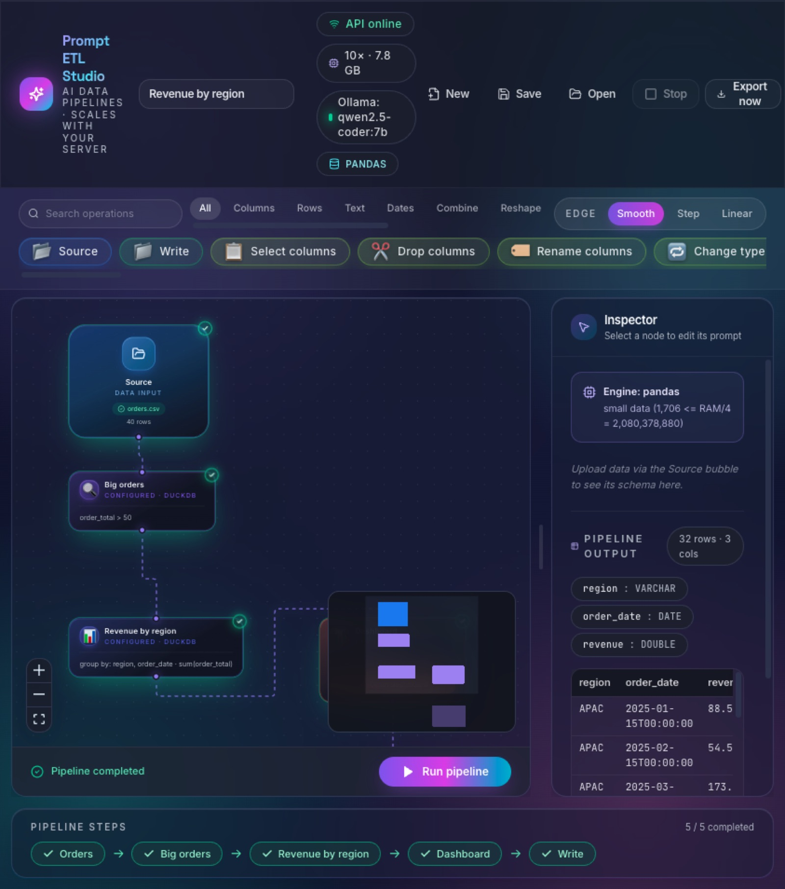
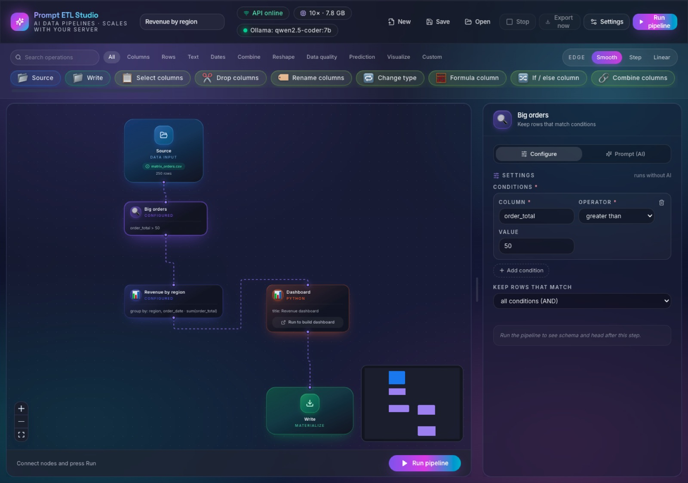

A self-hosted studio for filters, joins, predictions, and dashboards. Each box is a setting you fill in. When a step is easier to say than to configure, a model on your machine writes it.


Docker is the whole install. The container brings the studio, the database, and the file store. Your data stays in the prompt-etl-data volume.
docker pull ghcr.io/nirmalk960/prompt-etl:0.2.1 docker run -d --name prompt-etl \ -p 8080:8080 \ -v prompt-etl-data:/data \ --add-host=host.docker.internal:host-gateway \ ghcr.io/nirmalk960/prompt-etl:0.2.1
Open http://localhost:8080. Add -m 16g when the machine has the memory. The same image picks a larger engine as RAM grows.
The first start writes an access token onto the volume. Paste it into Settings. Each install has its own token.
docker exec prompt-etl cat /data/access_token
Install Ollama on the computer, not in the container. The studio already looks for it at host.docker.internal:11434.
ollama pull qwen2.5-coder:7b
Use qwen2.5-coder:14b from about 14 GB of RAM, and :32b from about 28 GB. Pass -e OLLAMA_MODEL=qwen2.5-coder:14b on docker run for a larger model.